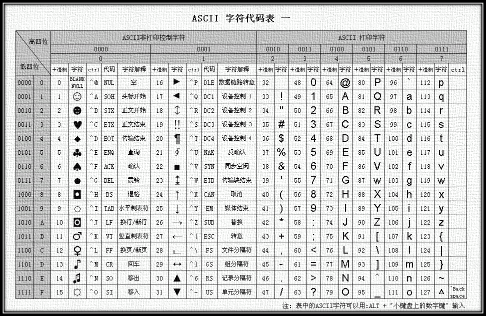

简介
字符集（Charset）： 是一个系统支持的所有抽象字符的集合，简单来说就是字符的集合。常见的字符集有ASCII字符集、Unicode字符集、GB2312字符集、BIG5字符集、GB18030字符集等字符是各种文字和符号的总称，包括各国家文字、标点符号、图形符号、数字等。
字符编码（Character Encoding）： 是一套法则，简单来说就是规定如何保存字符的法则，使用该法则能够对自然语言的字符的一个集合，与其他东西的一个集合（如号码或电脉冲）进行配对。即在符号集合与数字系统之间建立对应关系，它是信息处理的一项基本技术。通常人们用符号集合（一般情况下就是文字）来表达信息。而以计算机为基础的信息处理系统则是利用元件（硬件）不同状态的组合来存储和处理信息的。元件不同状态的组合能代表数字系统的数字，因此字符编码就是将符号转换为计算机可以接受的数字系统的数，称为数字代码。
读取文字： -- 读取二进制流 -> 根据编码方式解码出码点 -> 根据码点解释出字符 -> 系统渲染绘出这个字符
输入文字： -- 输入字符 -> 根据字符找到对应码点 -> 根据编码方式把码点编码成二进制流 -> 保存二进制流到硬盘
为什么要编码？ -- 良好设计的编码可以为我们提供很多附加的功能，包括容错纠错（在网络通信中尤其重要），自同步（不必从文本头部开始就可以解码）等等。编码从信息论的角度上来说就是增加了冗余的信息，冗余的这部分信息就可以为我们提供额外的功能。
以下是常见的汉字字符集编码：
-
GB2312 编码：1981 年 5 月 1 日发布的简体中文汉字编码国家标准。GB2312 对汉字采用双字节编码，收录 7445 个图形字符，其中包括 6763 个汉字。
-
BIG5 编码：台湾地区繁体中文标准字符集，采用双字节编码，共收录 13053 个中文字，1984 年实施。
-
GBK 编码：1995 年 12 月发布的汉字编码国家标准，是对 GB2312 编码的扩充，对汉字采用双字节编码。GBK 字符集共收录 21003 个汉字，包含国家标准 GB13000-1 中的全部中日韩汉字，和 BIG5 编码中的所有汉字。
-
GB18030 编码：2000 年 3 月 17 日发布的汉字编码国家标准，是对GBK编码的扩充，覆盖中文、日文、朝鲜语和中国少数民族文字，其中收录 27484 个汉字。GB18030 字符集采用单字节、双字节和四字节三种方式对字符编码。兼容 GBK 和 GB2312 字符集。
-
Unicode 编码：国际标准字符集，它将世界各种语言的每个字符定义一个唯一的编码，以满足跨语言、跨平台的文本信息转换。UTF-8、UTF-16、UTF-32 都是 Unicode 编码方式，UTF 是 “Unicode Transformation Format” 的缩写，可以翻译成 Unicode 字符集转换格式，即怎样将 Unicode 定义的数字转换成程序数据。
一个故事
字节： 很久很久以前，有一群人，他们决定用 8 个可以开合的晶体管来组合成不同的状态，以表示世界上的万物。他们看到 8 个开关状态是好的，于是他们把这称为“字节”。
计算机： 再后来，他们又做了一些可以处理这些字节的机器，机器开动了，可以用字节来组合出很多状态，状态开始变来变去。他们看到这样是好的，于是它们就这机器称为“计算机”。
控制码： 开始计算机只在美国用。八位的字节一共有 256 种不同的状态。 他们把其中的编号从 0 开始的 32 种状态分别规定了特殊的用途，一但终端、打印机遇上这些字节被传过来时，就要做一些约定的动作。于是打印机会打印反白的字了（0x1b…），会换行(0x10)了，终端会嘟嘟(0x07)叫了，有色彩(0x1b…)了。他们看到这样很好，于是就把这些 0x20 以下的字节状态称为“控制码”。
ASCII： 他们又把所有的空格、标点符号、数字、大小写字母分别用连续的字节状态表示，一直编到了第 127 号，这样计算机就可以用不同字节来存储英语的文字了。大家看到这样，都感觉很好，于是大家都把这个方案叫做 ANSI 的 “Ascii” 编码（American Standard Code for Information Interchange，美国信息互换标准代码），所有的计算机都用同样的 ASCII 方案来保存英文文字。
EASCII： 后来，就像建造巴比伦塔一样，世界各地的都开始使用计算机，但是很多国家用的不是英文，他们的字母里有许多是 ASCII 里没有的，为了可以在计算机保存他们的文字，他们决定采用 127 号之后的空位来表示这些新的字母、符号，还加入了很多画表格时需要用下到的横线、竖线、交叉等形状，一直把序号编到了最后一个状态 255。从 128 到 255 这一页的字符集被称“扩展字符集”。从此之后，贪婪的人类再没有新的状态可以用了，美帝国主义可能没有想到还有第三世界国家的人们也希望可以用到计算机吧！
GB2312： 等中国人们得到计算机时，已经没有可以利用的字节状态来表示汉字，况且有 6000 多个常用汉字需要保存呢。但是这难不倒智慧的中国人民，我们直接不客气地把那些 127 号之后的奇异符号们取消掉, 规定：两个连续字节表示一个汉字，高字节(前面的一个字节)从 0xA1 用到 0xF7，低字节从 0xA1 到 0xFE，这样我们就可以组合出大约 7000 多个简体汉字了。在这些编码里，我们还把数学符号、罗马希腊的字母、日文的假名们都编进去了，连在 ASCII 里本来就有的数字、标点、字母都统统重新编了两个字节长的编码，这就是常说的“全角”字符，而原来在 127 号以下的那些就叫“半角”字符了。 中国人民看到这样很不错，于是就把这种汉字方案叫做 “GB2312”。GB2312 是对 ASCII 的中文扩展。
GBK： 但是中国的汉字太多了，我们很快就就发现有许多人的人名没有办法在这里打出来，于是我们不得不继续把 GB2312 没有用到的码位找出来老实不客气地用上。 后来还是不够用，于是干脆不再要求低字节一定是 127 号之后的内码，只要第一个字节是大于 127 就固定表示这是一个汉字的开始，不管后面跟的是不是扩展字符集里的内容。结果扩展之后的编码方案被称为 GBK 标准，GBK 包括了 GB2312 的所有内容，同时又增加了近 20000 个新的汉字（包括繁体字）和符号。
GB18030： 后来少数民族也要用电脑了，于是我们再扩展，GBK 扩成了 GB18030，又加了几千个新的少数民族的字。从此之后，中华民族的文化就可以在计算机时代中传承了。
DBCS： 中国的程序员们看到这一系列汉字编码的标准是好的，于是通称他们叫做 “DBCS”（Double byte charecter set双字节字符集）。在 DBCS 系列标准里，单字节字符和双字节字符同时存在，因此他们写的程序为了支持中文处理，必须要注意字串里的每一个字节的值，如果这个值是大于 127 的，那么就认为一个双字节字符集里的字符出现了。那时候凡是受过加持，会编程的人都要每天念下面这个咒语数百遍：“一个汉字算两个英文字符！一个汉字算两个英文字符……”
但是世界民族之林中，还有很不少用不上电脑的少数民族，他们的文字怎么办？而且各个国家都像中国这样搞出一套自己的编码标准，结果互相之间谁也不懂谁的编码，谁也不支持别人的编码。当时的中国人想让电脑显示汉字，就必须装上一个“汉字系统”，专门用来处理汉字的显示、输入的问题，但是那个台湾的愚昧封建人士写的算命程序就必须加装另一套支持 BIG5 编码的什么“倚天汉字系统”才可以用。
真是计算机的巴比伦塔命题啊！
UNICODE： 正在这时，国际标谁化组织 ISO 及时出现了，他们决定废了所有的地区性编码方案，重新搞一个包括了地球上所有文化、所有字母和符号的编码来，还打算叫它 “Universal Multiple-Octet Coded Character Set”，简称 UCS, 俗称 “UNICODE”。
UNICODE 开始制订时，计算机的存储器容量极大地发展了，空间再也不成为问题了。于是 ISO 就没有考虑与ANSI兼容的问题，而直接规定必须用两个字节，也就是 16 位来统一表示所有的字符，由于“半角”英文符号只需要用到低 ８ 位，所以其高位永远是 ０，因此这种大气的方案在保存英文文本时会多浪费一倍的空间。
这时候，从旧社会里走过来的程序员开始发现一个奇怪的现象：他们的 strlen 函数靠不住了，一个汉字不再是相当于两个字符了，而是一个！是的，从 UNICODE 开始，无论是半角的英文字母，还是全角的汉字，它们都是统一的“一个字符！”同时，也都是统一的“两个字节”，请注意“字符”和“字节”两个术语的不同。UNICODE 的一个字符就是两个字节。一个汉字算两个英文字符的时代已经快过去了。
多种字符集存在时，那些做多语言软件的公司遇上了很大麻烦，他们在区域化软件时不得不也加持那个双字节字符集咒语，还要处处小心不要搞错。UNICODE 对于他们来说是一个很好的一揽子解决方案，于是从 Windows NT 开始，MS 趁机把它们的操作系统改了一遍，把所有的核心代码都改成了兼容 UNICODE 的版本，从这时开始，WINDOWS 系统终于无需要加装各种本土语言系统，就可以显示全世界上所有文化的字符了。
但是，UNICODE 在制订时没有考虑与任何一种现有的编码方案保持兼容，这使得 GBK 与 UNICODE 在汉字的内码编排上完全是不一样的，没有一种简单的算术方法可以把文本内容从一个编码转换到另一种编码，这种转换必须通过查表来进行。
如前所述，UNICODE 是用两个字节来表示为一个字符，他总共可以组合出 65535 不同的字符，这大概已经可以覆盖世界上所有文化的符号。如果还不够也没有关系，ISO 已经准备了 UCS-4 方案，说简单了就是四个字节来表示一个字符，这样我们就可以组合出 21 亿个不同的字符出来（最高位有其他用途），这大概可以用到银河联邦成立那一天吧！
UNICODE 来到时，一起到来的还有计算机网络的兴起，UNICODE 如何在网络上传输也是一个必须考虑的问题，于是面向传输的众多 UTF（UCS Transfer Format）标准出现了，顾名思义，UTF8 就是每次 8 个位传输数据，而 UTF16 就是每次 16 个位，只不过为了传输时的可靠性，从 UNICODE 到 UTF 时并不是直接的对应，而是要过一些算法和规则来转换。
ASCII
ASCII 字符集：主要包括控制字符（回车键、退格、换行键等）；可显示字符（英文大小写字符、阿拉伯数字和西文符号）。
ASCII 编码：将 ASCII 字符集转换为计算机可以接受的数字系统的数的规则。使用 7 位（bits）表示一个字符，共 128 字符；但是 7 位编码的字符集只能支持 128 个字符，为了表示更多的欧洲常用字符对 ASCII 进行了扩展，ASCII 扩展字符集使用 8 位（bits）表示一个字符，共 256 字符。
ASCII 控制字符
| 二进制 | 十进制 | 十六进制 | 缩写 | 可以显示的表示法 | 名称/意义 |
|---|---|---|---|---|---|
| 0000 0000 | 0 | 00 | NUL | ␀ | 空字符（Null） |
| 0000 0001 | 1 | 01 | SOH | ␁ | 标题开始 |
| 0000 0010 | 2 | 02 | STX | ␂ | 本文开始 |
| 0000 0011 | 3 | 03 | ETX | ␃ | 本文结束 |
| 0000 0100 | 4 | 04 | EOT | ␄ | 传输结束 |
| 0000 0101 | 5 | 05 | ENQ | ␅ | 请求 |
| 0000 0110 | 6 | 06 | ACK | ␆ | 确认回应 |
| 0000 0111 | 7 | 07 | BEL | ␇ | 响铃 |
| 0000 1000 | 8 | 08 | BS | ␈ | 退格 |
| 0000 1001 | 9 | 09 | HT | ␉ | 水平定位符号 |
| 0000 1010 | 10 | 0A | LF | ␊ | 换行键 |
| 0000 1011 | 11 | 0B | VT | ␋ | 垂直定位符号 |
| 0000 1100 | 12 | 0C | FF | ␌ | 换页键 |
| 0000 1101 | 13 | 0D | CR | ␍ | 归位键 |
| 0000 1110 | 14 | 0E | SO | ␎ | 取消变换（Shift out） |
| 0000 1111 | 15 | 0F | SI | ␏ | 启用变换（Shift in） |
| 0001 0000 | 16 | 10 | DLE | ␐ | 跳出数据通讯 |
| 0001 0001 | 17 | 11 | DC1 | ␑ | 设备控制一（XON 启用软件速度控制） |
| 0001 0010 | 18 | 12 | DC2 | ␒ | 设备控制二 |
| 0001 0011 | 19 | 13 | DC3 | ␓ | 设备控制三（XOFF 停用软件速度控制） |
| 0001 0100 | 20 | 14 | DC4 | ␔ | 设备控制四 |
| 0001 0101 | 21 | 15 | NAK | ␕ | 确认失败回应 |
| 0001 0110 | 22 | 16 | SYN | ␖ | 同步用暂停 |
| 0001 0111 | 23 | 17 | ETB | ␗ | 区块传输结束 |
| 0001 1000 | 24 | 18 | CAN | ␘ | 取消 |
| 0001 1001 | 25 | 19 | EM | ␙ | 连接介质中断 |
| 0001 1010 | 26 | 1A | SUB | ␚ | 替换 |
| 0001 1011 | 27 | 1B | ESC | ␛ | 跳出 |
| 0001 1100 | 28 | 1C | FS | ␜ | 文件分割符 |
| 0001 1101 | 29 | 1D | GS | ␝ | 组群分隔符 |
| 0001 1110 | 30 | 1E | RS | ␞ | 记录分隔符 |
| 0001 1111 | 31 | 1F | US | ␟ | 单元分隔符 |
| 0111 1111 | 127 | 7F | DEL | ␡ | 删除 |
ASCII 可显示字符
|
|
|
ASCII 字符代码表：

扩展 ASCII 字符代码表：

GB2312
GB2312 编码是第一个汉字编码国家标准，由中国国家标准总局 1980 年发布，1981 年 5 月 1 日开始使用。GB2312 编码共收录汉字 6763 个，其中一级汉字 3755 个，二级汉字 3008 个。同时，GB2312 编码收录了包括拉丁字母、希腊字母、日文平假名及片假名字母、俄语西里尔字母在内的 682 个全角字符。
GB2312 是一种区位码。分为 94 个区(01-94)，每区94个字位(01-94)。
- 01-09 区为特殊符号
- 10-15 区没有编码
- 16-55 区为一级汉字，按拼音排序，共 3755 个
- 56-87 区为二级汉字，按部首／笔画排序，共 3008 个
- 88-94 区没有编码
GB2312 编码表： GB2312 编码表
GB2312 规定对收录的 每个字符采用两个字节 表示(GB2312 编码文件中并不是所有字符都是两个字节，ASCII 码只占一个字节)，第一个字节为“高字节”，对应 94 个区；第二个字节为“低字节”，对应 94 个位。所以它的区位码范围是：0101－9494。区号和位号分别加上 0xA0 就是 GB2312 编码。
GB2312 编码与 ASCII 码并存同一个文件的问题，因为 GB2312 兼容 ASCII, 所有 ASCII 码还是只占一个字节。因为 GB2312 编码范围为：A1A1－FEFE，最小为 161, ASCII 为 0-127，所有很容易知道一个字节表示的是 GB2312 还是 ASCII。
GB2312 编码范围：A1A1－FEFE，其中汉字编码范围：B0A1-F7FE。
区开始: 01 区结束: 94 区范围: 01 + 0xA0 = 0xA1 到 94 + 0xA0 = 0xFE 位开始: 01 位结束: 94 位范围: 01 + 0xA0 = 0xA1 到 94 + 0xA0 = 0xFE 区范围计算: 01 + 0xA0 = 0xA1, 94 + 0xA0 = 0xFE 位范围计算: 01 + 0xA0 = 0xA1, 94 + 0xA0 = 0xFE 因此计算得 GB2312 编码范围为：A1A1-FEFE 一级汉字区范围计算: 16 + 0xA0 = 0xB0, 55 + 0xA0 = 0xD7, 区范围: 0xB0 - 0xD7 二级汉字区范围计算: 56 + 0xA0 = 0xD8, 87 + 0xA0 = 0xF7, 区范围: 0xD8 - 0xF7 因此计算得 GB2312 编码汉字范围为：B0A1-F7FE GB2312 编码计算: 1.查询 GB2312 编码表, 找到区位码，比如：'陈' 为 第 19 区 第 34 位 2.区计算: 0xA0 + 19 = 0xB3 3.位计算: 0xA0 + 34 = 0xC2 4.得到 '陈' 的 GB2312 编码为 B3C2 5.验证：新建一个文本文件，输入 '陈', 并保存为 GB2312 编码； 6.验证：使用二进制方式打开文件，十六进制显示其内容，查看内容为: B3C2。
GBK
GBK 编码，是对 GB2312 编码的扩展，因此完全兼容 GB2312-80 标准。GBK编码依然采用双字节编码方案，其编码范围：8140－FEFE，剔除 xx7F 码位(第个区的 7F 位都为空)，共 23940 个码位。共收录汉字和图形符号 21886 个，其中汉字（包括部首和构件）21003 个，图形符号 883 个。GBK 编码支持国际标准 ISO/IEC10646-1 和国家标准 GB13000-1 中的全部中日韩汉字，并包含了 BIG5 编码中的所有汉字。GBK编码方案于 1995 年 12 月 15 日正式发布，这一版的 GBK 规范为 1.0 版。
GBK 亦采用双字节表示，总体编码范围为 8140-FEFE，首字节在 81-FE 之间，尾字节在 40-FE 之间， 剔除 xx7F 一条线。总计 23940 个码位，共收入 21886 个汉字和图形符号，其中汉字（包括部首和构件）21003 个，图形符号 883 个。
GBK 编码范围为: 8140－FEFE, 完全兼容 GB2312-80 标准, 意味着 GB2312 中每个字符的编码，同样是 GBK 中的编码。比如：'陈' 在 GB2312 中的编码为 B3C2, 在 GBK 编码表中查询: 区:B3, 位:C2, 同样也是 ‘陈'。
GBK 规范收录了 ISO 10646.1 中的全部 CJK 汉字和符号，并有所补充。具体包括： 1. GB 2312 中的全部汉字、非汉字符号。 2. GB 13000.1 中的其他 CJK 汉字。以上合计 20902 个 GB 化汉字。 3. 《简化字总表》中未收入 GB 13000.1 的 52 个汉字。 4. 《康熙字典》及《辞海》中未收入 GB 13000.1 的 28 个部首及重要构件。 5. 13 个汉字结构符。 6. BIG-5 中未被 GB 2312 收入、但存在于 GB 13000.1 中的 139 个图形符号。 7. GB 12345 增补的 6 个拼音符号。 8. 汉字“○”。 9. GB 12345 增补的 19 个竖排标点符号（GB 12345 较 GB 2312 增补竖排标点符号 29 个， 其中 10 个未被 GB 13000.1 收入，故 GBK 亦不收）。 10. 从 GB 13000.1 的 CJK 兼容区挑选出的 21 个汉字。 11. GB 13000.1 收入的 31 个 IBM OS/2 专用符号。 12.未录入《新华字典》上的一些字，如“韡”的简体。 全部编码分为三大部分： 1. 汉字区。包括： a. GB 2312 汉字区。即 GBK/2: B0A1-F7FE。收录 GB 2312 汉字 6763 个，按原顺序排列。 b. GB 13000.1 扩充汉字区。包括： b.1 GBK/3: 8140-A0FE。收录 GB 13000.1 中的 CJK 汉字 6080 个。 b.2 GBK/4: AA40-FEA0。收录 CJK 汉字和增补的汉字 8160 个。CJK 汉字在前，按 UCS 代码大小排列； 增补的汉字（包括部首和构件）在后，按《康熙字典》的页码/字位排列。 2. 图形符号区。包括： a. GB 2312 非汉字符号区。即 GBK/1: A1A1-A9FE。其中除 GB 2312 的符号外， 还有 10 个小写罗马数字和 GB 12345 增补的符号。计符号 717 个。 b. GB 13000.1 扩充非汉字区。即 GBK/5: A840-A9A0。BIG-5 非汉字符号、结构符和“○”排列在此区。计符号 166 个。 3. 用户自定义区：分为(1)(2)(3)三个小区。 (1) AAA1-AFFE，码位 564 个。 (2) F8A1-FEFE，码位 658 个。 (3) A140-A7A0，码位 672 个。 第(3)区尽管对用户开放，但限制使用，因为不排除未来在此区域增补新字符的可能性。
GBK 编码表： GBK 编码表
GB18030
GB18030 向下兼容 GBK 和 GB2312 编码。GB18030 编码采用单字节、双字节、四字节分段编码方案，具体码位如下。
-
对应 ASCII: 单字节部分采用 GB/T 11383 的编码结构与规则，使用 0x00 至 0x7F 码位。
-
对应 GBK(因 GB2312 也在 GBK 中，所以也包括了 GB2312): 双字节部分，首字节码位从 0x81 至 0xFE，尾字节码位分别是 0x40 至 0x7E 和 0x80 至 0xFE。
-
扩充: 四字节部分采用 GB/T 11383 未采用的 0x30 到 0x39 作为对双字节编码扩充的后缀，这样扩充的四字节编码，其范围为 0x81308130 到 0xFE39FE39。其中第一、三个字节编码码位均为 0x81 至 0xFE，第二、四个字节编码码位均为 0x30 至 0x39。
GB18030 有两个版本：GB18030-2000 和 GB18030-2005。GB18030-2000 是 GBK 的取代版本，它的主要特点是在 GBK 基础上增加了 CJK 统一汉字扩充 A 的汉字。GB18030-2005 的主要特点是在 GB18030-2000 基础上增加了 CJK 统一汉字扩充 B 的汉字。
Unicode
Unicode 和 UCS
为了统一全世界各国语言文字和专业领域符号的编码,ISO制定 了 ISO 10646 标准,也称为 UCS(Universal Character Set)。UCS 编码的长度是 31 位,可以表 示 2^31 个字符。如果两个字符编码的高位相同,只有低 16 位不同,则它们属于一个平面(Plane), 所以一个平面由 2^16 个字符组成。目前常用的大部分字符都位于第一个平面(编码范围是U- 00000000~U-0000FFFD),称为 BMP(Basic Multilingual Plane)或 Plane 0,为了向后兼容,其 中编号为 0~256 的字符和 Latin-1 相同。UCS 编码通常用 U-xxxxxxxx 这种形式表示,而 BMP 的编码 通常用 U+xxxx 这种形式表示,其中 x 是十六进制数字。在 ISO 制定 UCS 的同时,另一个由厂商联合 组织也在着手制定这样的编码,称为 Unicode,后来两家联手制定统一的编码,但各自发布各自的 标准文档,所以 UCS 编码和 Unicode 码是相同的。
有了字符编码,另一个问题就是这样的编码在计算机中怎么表示。现在已经不可能用一个字节表示 一个字符了,最直接的想法就是用四个字节表示一个字符,这种表示方法称为 UCS-4 或 UTF- 32,UTF 是 Unicode Transformation Format 的缩写。一方面这样比较浪费存储空间,由于常用字符 都集中在 BMP,高位的两个字节通常是 0,如果只用 ASCII 码或 Latin-1,高位的三个字节都是 0。另 一种比较节省存储空间的办法是用两个字节表示一个字符,称为 UCS-2 或 UTF-16,这样只能表 示 BMP 中的字符,但BMP中有一些扩展字符,可以用两个这样的扩展字符表示其它平面的字符, 称为 Surrogate Pair。无论是 UTF-32 还是 UTF-16 都有一个更严重的问题是和 C 语言不兼容,在 C 语 言中 0 字节表示字符串结尾,库函数 strlen 、 strcpy 等等都依赖于这一点,如果字符串用 UTF-32 存 储,其中有很多 0 字节并不表示字符串结尾,这就乱套了。
UNIX 之父 Ken Thompson 提出的 UTF-8 编码很好地解决了这些问题,现在得到广泛应用。UTF-8具 有以下性质:
-
编码为 U+0000~U+007F 的字符只占一个字节,就是 0x00~0x7F(0000 0000 - 0111 1111),和 ASCII 码兼容。
-
编码大于 U+007F 的字符用 2~6 个字节表示,每个字节的最高位都是 1,而 ASCII 码的最高位都是 0,因此非 ASCII 码字符的表示中不会出现 ASCII 码字节(也就不会出现 0 字节)。
-
用于表示非 ASCII 码字符的多字节序列中,第一个字节的取值范围是 0xC0~0xFD(1100 0000 - 1111 1101),根据它可 以判断后面有多少个字节也属于当前字符的编码。后面每个字节的取值范围都 是 0x80~0xBF(1000 0000 - 1011 1111),见下面的详细说明。
-
UCS 定义的所有 2^31 个字符都可以用 UTF-8 编码表示出来。
-
UTF-8 编码最长 6 个字节,BMP 字符(16 位)的 UTF-8 编码最长三个字节。
-
0xFE(1111 1110) 和 0xFF(1111 1111) 这两个字节在 UTF-8 编码中不会出现。(用于表示 字节序 )
Unicode 是计算机科学领域里的一项业界标准,包括字符集、编码方案等。Unicode 是为了解决传统的字符编码方案的局限而产生的，它为每种语言中的每个字符设定了统一并且唯一的二进制编码，以满足跨语言、跨平台进行文本转换、处理的要求。1990 年开始研发，1994 年正式公布。
Unicode 是国际组织制定的可以容纳世界上所有文字和符号的字符编码方案。目前的 Unicode 字符分为 17 组编排，0x0000 至 0xFFFF，每组称为平面（Plane），而每平面拥有 65536 个码位，共 1114112 个。然而目前只用了少数平面。UTF-8、UTF-16、UTF-32 都是将数字转换到程序数据的编码方案。
Unicode 只做了一件事：用来把字符映射到数字上。
Unicode 编码表： Unicode 编码表
- 这个世界上从来没有纯文本这回事，如果你想读出一个字符串，你必须知道它的编码。
- Unicode 是一个简单的标准，用来把字符映射到数字上。Unicode 协会的人会帮你处理所有幕后的问题，包括为新字符指定编码。
- Unicode 并不告诉你字符是怎么编码成字节的。这是被编码方案决定的，通过 UTF-x 来指定。
UCS-2
UCS-4
UTF-8
UTF-8 的编码规则：
-
如果是单字节字符，二进制以 0 开头，为 ASCII 码；
-
多字节字符二进制第一个字节以若干个 1 开头，有几个字节就是几个 1，再接一个 0；后面的字节都以 10 开头。
| Unicode编码(十六进制) | UTF-8 字节流(二进制) | 字节数 |
| 00000000-0000007F | 0xxxxxxx | 单字节 |
| 00000080-000007FF | 110xxxxx 10xxxxxx | 两个字节 |
| 00000800-0000FFFF | 1110xxxx 10xxxxxx 10xxxxxx | 三个字节 |
| 00010000-001FFFFF | 11110xxx 10xxxxxx 10xxxxxx 10xxxxxx | 四个字节 |
| 00200000-03FFFFFF | 111110xx 10xxxxxx 10xxxxxx 10xxxxxx 10xxxxxx | 五个字节 |
| 04000000-7FFFFFFF | 1111110x 10xxxxxx 10xxxxxx 10xxxxxx 10xxxxxx 10xxxxxx | 六个字节 |
unicode 和 utf-8 相互转换
# 1. 已知 unicode 码，求 utf-8 编码 # 已知 '陈' 的 unicode 编码为：0x9648, 求其 utf-8 编码？ # 1.1 先确定这个 unicode 码使用 utf-8 编码是用几个字节存储的, 根据上表可知其范围在 000800-00FFFF,为三字节字符 # 1.2 由上表可知三字节字符 utf-8 固定格式为： 1110xxxx 10xxxxxx 10xxxxxx # 1.3 将 unicode 码 0x9648 转换为二进制： 1001 0110 0100 1000 # 1.4 将此 unicode 码二进制依次从最后一位替换 utf-8 格式中的 x 得到： 11101001 10011001 10001000 # 1.5 上一步已得到 utf-8 编码的二进制，转换为十六进制为：E99988 # 1.6 验证：新建一个文本文件，写入 '陈',并保存为 utf-8 编码；使用二进制打开查看其编码为： E9 99 88 # 2. 已知 utf-8 编码，求 unicode 码对应字符 # 已知一个 utf-8 编码文件内容为： E9 99 88 E8 8C 82, 求其 unicode 码对应字符？ # 2.1 先读取第一个字节，E9 转换为二进制：1110 1001 # 2.2 由上可知第一个 utf-8 编码为一个三字节字符，三个字节 E9 99 88 编码转换为二进制： 11101001 10011001 10001000 # 2.3 由表可知三字节字符 utf-8 固定格式为： 1110xxxx 10xxxxxx 10xxxxxx # 2.4 将将 2.2 步中 utf-8 编码对应三字节字符格式的 x 对应位抽取： 1001 011001 001000 # 2.5 上一步已得到第一个 unicode 码字符的二进制，转换为十六进制为： 0x9648 # 2.6 查 unicode 编码表得知 0x9648 对应字符：'陈' # 2.7 再读取下一个字节，E8 转换为二进制：1110 1020 # 2.8 由上可知第二个 utf-8 编码为一个三字节字符，三个字节 E8 8C 82 编码转换为二进制： 11101000 10001100 10000010 # 2.9 将上一步中 utf-8 编码对应三字节字符格式的 x 对应位抽取： 1000 001100 000010 # 2.10 上一步已得到第一个 unicode 码字符的二进制，转换为十六进制为： 0x8302 # 2.11 查 unicode 编码表得知 0x8302 对应字符：'茂' # 2.12 验证：新建一个文本文件，写入 '陈茂',并保存为 utf-8 编码；使用二进制打开查看其编码为： E9 99 88 E8 8C 82
UTF-16
UTF-32
Linux C 下的 Unicode
C 语言中的多字节字符（宽字符）。运行这个程序相当于把这一串字节 write 到当前终端的设备文件。如果当前终端的驱动程序能够识别 UTF-8 编码就能打印出汉字,如果当前终端 的驱动程序不能识别 UTF-8 编码(比如一般的字符终端)就打印不出汉字。也就是说,像这种程 序,识别汉字的工作既不是由 C 编译器做的，也不是由 libc 做的,C 编译器原封不动地把源文件中 的 UTF-8 编码复制到目标文件中, libc 只是当作以 0 结尾的字符串原封不动地 write 给内核,识别汉 字的工作是由终端的驱动程序做的。
但是仅有这种程度的汉字支持是不够的,有时候我们需要在 C 程序中操作字符串里的字符,比如求 字符串 "你好\n"
中有几个汉字或字符,用 strlen 就不灵了,因为 strlen 只看结尾的 0 字节而不管字符
串里存的是什么,求出来的是字节数 7。为了在程序中操作 Unicode 字符,C 语言定义了宽字符 (Wide
Character)类型 wchar_t 和一些库函数。在字符常量或字符串字面值前面加一个 L 就表示宽
字符常量或宽字符串,例如定义
wchar_t c = L'你';
,变量 c 的值就是汉字 “你” 的 31 位 UCS 编码, 而
L"你好\n"
就相当于
{L'你', L'好', L'\n', 0}
, wcslen 函数就可以取宽字符串中的字符个数。看 下面的程序:
#include <stdio.h>
#include <locale.h>
int main(void) {
if (!setlocale(LC_CTYPE, "")) {
fprintf(stderr, "Can't set the specified locale! Check LANG, LC_CTYPE, LC_ALL.\n");
return 1;
}
printf("%ls", L"你好\n");
return 0;
}
宽字符串
L"你好\n"
在源代码中当然还是存成 UTF-8 编码的,但编译器会把它变成 4 个 UCS 编 码
0x00004f60 0x0000597d 0x0000000a 0x00000000
保存在目标文件中,按小端存储就是
60 4f 00 00 7d 59 00 00 0a 00 00 00 00 00 00 00
,用 od 命令查看目标文件应该能找到这些字节。
printf
的
%ls
转换说明表示把后面的参数按宽字符串解释,不是见到 0 字节就结束,而是见到 UCS 编 码为 0 的字符才结束,但是要
write 到终端仍然需要以多字节编码输出,这样终端驱动程序才能识 别,所以 printf 在内部把宽字符串转换成多字节字符串再
write 出去。事实上,C 标准并没有规定多
字节字符必须以UTF-8编码,也可以使用其它的多字节编码,在运行时根据环境变量确定当前系统 的编码,所以在程序开头需要调用
setlocale 获取当前系统的编码设置,如果当前系统是 UTF- 8 的, printf 就把 UCS 编码转换成
UTF-8 编码的多字节字符串再 write 出去。一般来说,程序在做内
部计算时通常以宽字符编码,如果要存盘或者输出给别的程序,或者通过网络发给别的程序,则采 用多字节编码。
直接修改可执行文件内容 -- 使用 utf-8 编码保存以下代码，然后使用 od 命令查看生成的可执行文件。能在可执行文件查到 '你好' 对应 utf-8 编码。
#include <stdio.h>
int main(int argc, char *argv[]) {
/**
* unicode 码 -- '你': 4F 60 '好': 59 7D
* utf-8 编码 -- '你': E4 BD A0 '好': E5 A5 BD
* 使用od 命令查看生成的可执行文件：
* $ od -tx1 a.out | grep "e4 bd a0 e5 a5 bd"
*/
printf("你好\n");
return 0;
}
/**
# vim 中直接修改二进制文件内容，使 '你好' 变成 '佢好'
$ vim -b a.out # 二进制打开
:%!xxd # 十六进制显示
# 查找 e4 bd a0 修改为 e4 bd a2, '佢' 的 utf-8 编码为 e4 bd a2
:%!xxd -r # 转换回来
:wq # 存盘退出
$ ./a.out # 发现输出变为 ‘佢好’
*/
字节序,内存序和网络序
字节序
字节序是指多字节数据在计算机内存中存储或者网络传输时各字节的存储顺序。字节序有两种，分别是“大端”（Big Endian, BE）和“小端”（Little Endian, LE）。
你好在内存中如此表示：
60 4f 00 00 7d 59 00 00